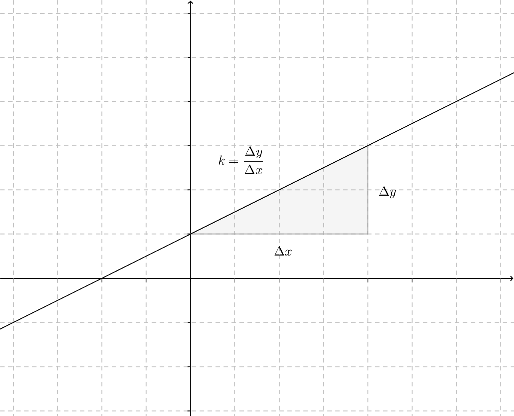
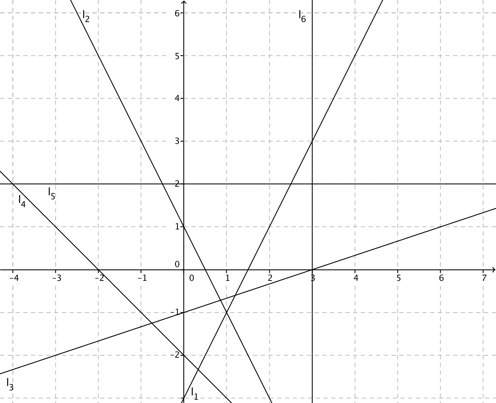
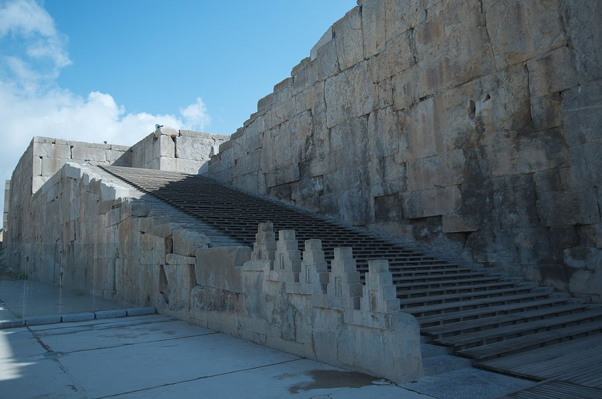
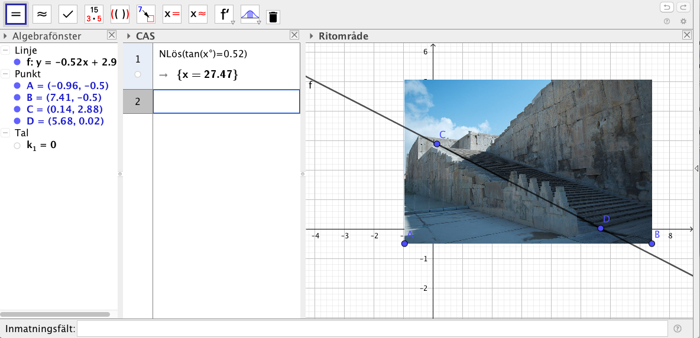

7. Riktningskoefficient
Vi studerar linjerna \( y=\dfrac{1}{2}x-2 \) och \( y=2x-2 \) i samma koordinatsytem. Vad kan vi säga om deras skärningspunkt med y-axeln och x-axeln? Vad kan vi säga om deras lutning?
Video
Riktingskoefficienten, k, bestäms som \( k=\dfrac{\Delta y}{\Delta x}=\dfrac{y_2-y_1}{x_2-x_1}. \)

Är riktningskoefficienten, \( k \)
- \( k > 0 \) har vi en stigande, växande linje
- \( k=0 \) har vi en kostant linje
- \( k < 0 \) har vi en avtagande linje
- är \( k \) odefinierat har vi en lodrät linje.
Exempel 1 Bestäm riktningskoefficienten för linjen som går genom punkterna \( (-1,-3) \) och \( (1,4) \).
Lösning
Riktingskoefficienten får vi som \( k=\dfrac{\Delta y}{\Delta x} = \dfrac{4-(-3)}{1-(-1)} = \dfrac{7}{2} \).
Linjer som skär \( y \)-axlen har en viss lutning. Denna lutning kan vi ange som en riktningskoefficent eller som en vinkel. Sambandet mellan riktningskoefficienten och vinkeln är \( \tan \alpha = \dfrac{\Delta y}{\Delta x} =k \). Vi får lutningen för en linje genom att veta riktningskoefficienten.

Exempel 2 Bestäm vinkeln som flygplanet lyfter med från marken.
VIDEO
Exempel 3 Ligger punkterna \( (-2,-4) \), \( (0,-1) \) och \( (2,2) \) på samma linje?
Lösning
Vi bildar riktngningskoefficienterna får två linjer. Får vi samma värde i bägge fallen ligger punkterna på samma linje.
\( k_1 = \dfrac{y_2-y_1}{x_2-x_1} = \dfrac{-4-(-1)}{-2-0} = \dfrac{-3}{-2}= \dfrac{3}{2} \)
\( k_2 = \dfrac{y_2-y_1}{x_2-x_1} = \dfrac{-1-2}{0-2} = \dfrac{-3}{-2} =\dfrac{3}{2} \)
\( k_1 = k_2 \) så punkterna ligger på samma linje.
Sitationen ser ut som:

Uppgifter
- Bestäm utgående från bilden riktningskoefficienterna för linjerna i bilden.

Påstående \( k=-2 \) \( k=-1 \) \( k=0 \) \( k=\dfrac{1}{3} \) \( k=2 \) Riktningskoefficienten är odefinierad. \( l_1 \) \( l_2 \) \( l_3 \) \( l_4 \) \( l_5 \) \( l_6 \) Rätt lösning ärPåstående \( k=-2 \) \( k=-1 \) \( k=0 \) \( k=\dfrac{1}{3} \) \( k=2 \) Riktningskoefficienten är odefinierad. \( l_1 \) \( l_2 \) \( l_3 \) \( l_4 \) \( l_5 \) \( l_6 \) - Bestäm riktningskoefficienten för linjerna som går genom \( (1,4) \) och punkten i uppgiften. Är linjerna växande, konstanta eller avtagande?
- Punkten \( (0,1) \).
Riktningskoefficienten har värdet \( \dfrac{\Delta y}{\Delta x} = \dfrac{4-1}{1-0} = 3 \) och linjen är växande.
- Punkten \( (3,4) \).
Riktningskoefficienten har värdet \( \dfrac{\Delta y}{\Delta x} = \dfrac{4-4}{1-3} = 0 \) och linjen är konstant.
- Punkten \( (-1,6) \).
Riktningskoefficienten har värdet \( \dfrac{\Delta y}{\Delta x} = \dfrac{4-6}{1-(-1)} = -1 \) och linjen är avtagande.
- Punkten \( (2,0) \).
Riktningskoefficienten har värdet \( \dfrac{\Delta y}{\Delta x} = \dfrac{4-0}{1-2} = -4 \) och linjen är avtagande.
- Punkten \( (0,1) \).
- En linje går genom punkten \( (-3,-4) \) och riktningskoefficienten är 2. Är följande punkter på linjen?
Påstående Ja Nej \( (1,4) \) \( (5,11) \) \( (3,8) \) Rätt lösning
Påstående Ja Nej \( (1,4) \) \( (5,11) \) \( (3,8) \) Bestäm lutningen för trapporna vid Persepolis. Svara med en tiondel grads noggrannhet.

Bilden hittar du här.
Något i stil med

- Bestäm lutning för högra sidan av toppen av Matterhorn. Svara med en tiondel grads noggrannhet.

Bilden hittar du här.
Något i stil med

- Bestäm lutningen för trapporna från Plaza Lafayette till Henry Hudson Parkway i New York. Svara med en tiondels grads noggrannhet.

Bilden hittar du här.
Något i stil med

- Bestäm \( a \) så att punkterna \( (-4,-3) \), \( (a,-1) \) och \( (2,1) \) ligger på samma linje.
För att punkterna skall ligga på samma linje skall riktningskoefficienten vara samma oberoende vilka punkter vi har.
Vi tar och bildar riktningskoefficienten, \( k=\dfrac{\Delta y}{\Delta x} = \dfrac{-3-(-1)}{-4-a} = \dfrac{-3-1}{-4-2} \).
Vi får att \( \dfrac{-2}{-4-a}=\dfrac{-4}{-6} \) som har lösningen \( a=-1 \).
- Bestäm \( a \) så att punkterna \( (-3,2) \), \( (3,a) \) och \( (6,-4) \) ligger på samma linje.
För att punkterna skall ligga på samma linje skall riktningskoefficienten vara samma oberoende vilka punkter vi har.
Vi tar och bildar riktningskoefficienten, \( k=\dfrac{\Delta y}{\Delta x} = \dfrac{2-a}{-3-3} = \dfrac{-4-2}{6-(-3)} \).
Vi får att \( \dfrac{2-a}{-6}=\dfrac{-6}{9} \) som har lösningen \( a=-2 \).